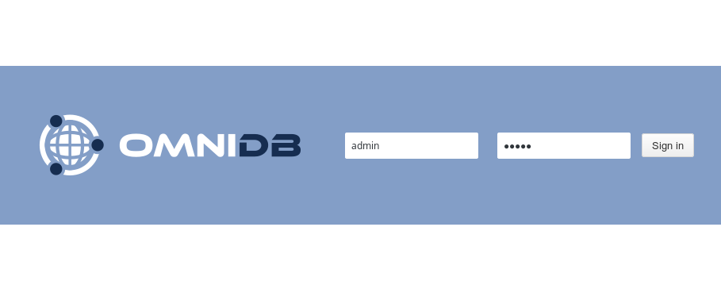
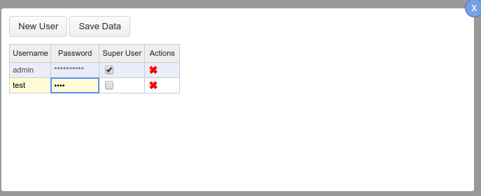
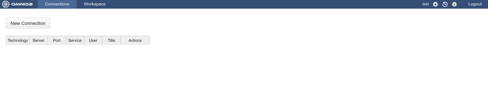
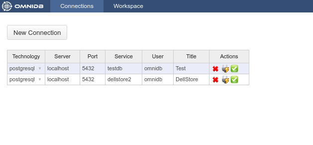
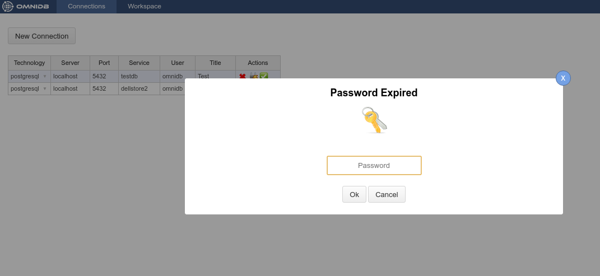
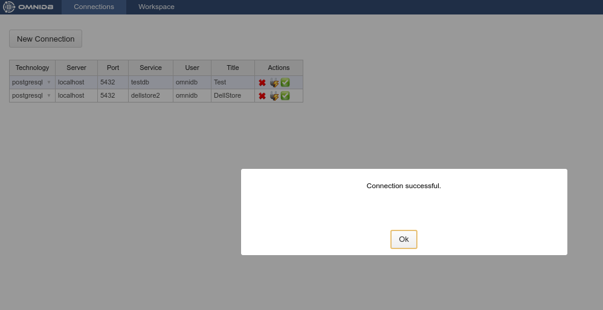
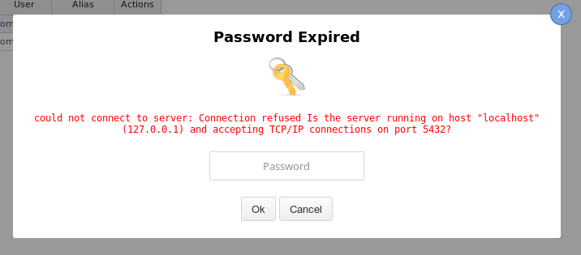

O OmniDB vem apenas com o usuário admin. Se você estiver usando a versão do servidor, a primeira coisa é fazer login como admin, a senha padrão é admin. Você não precisa fazer login na versão do aplicativo.

A próxima janela é a janela Connections. Vamos falar sobre isso mais tarde.
Clique no ícone Users no canto superior direito. Ele abrirá um pop-up que permite que o super usuário OmniDB atual crie um novo usuário OmniDB.

Depois de clicar no ícone Users, a ferramenta insere um novo usuário chamado user2 (se esse é o primeiro usuário após o admin).

Você terá que mudar username e password. Marque se você deseja que o novo usuário seja um super usuário. Esta janela de gerenciamento de usuários só é acessada por super usuários. Quando terminar, clique no botão Save Data dentro do pop-up.

Você pode criar tantos usuários quanto quiser, editar usuários existentes e também excluir usuários clicando na cruz vermelha na coluna Actions. Agora você pode sair.
Vamos logar como o usuário que acabamos de criar.

E podemos ver a janela Connections novamente. Observe que agora não há o ícone Users, porque o usuário de teste não é um super usuário.

O OmniDB versão C# suporta vários SGBDs. No momento, o OmniDB versão Python, ou OmniDB 2.0, suporta apenas o PostgreSQL. O suporte a mais SGBDs está sendo adicionado enquanto você lê isso.
Agora vamos criar duas conexões aos bancos de dados PostgreSQL. Para criar as conexões você deve clicar no botão New Connection e, em seguida, escolher a conexão e preencher os outros campos. Depois de preencher todos os campos para ambas as conexões, clique no botão Save Data.

Para cada conexão há uma coluna Actions onde você pode excluir, testar e seleciona-la. Vá em frente e teste uma das conexões.

Observe o menu pop-up Password Expired. Isso está acontecendo porque OmniDB não armazena a senha do usuário do banco de dados no disco. Quando o usuário digita uma senha neste pop-up, a senha é criptografada e armazenada na memória.
Após digitar a senha e pressionar Enter, se a conexão ao banco de dados for bem sucedida você verá um pop-up de confirmação.

Mas, se você tiver problemas de qualquer tipo na conexão ao seu banco de dados PostgreSQL, o pop-up Password Expired continuará mostrando o erro que o OmniDB obteve.

Além disso, na grade de conexões, se você clicar na ação Select Connection, o OmniDB irá abrir na janela Workspace.